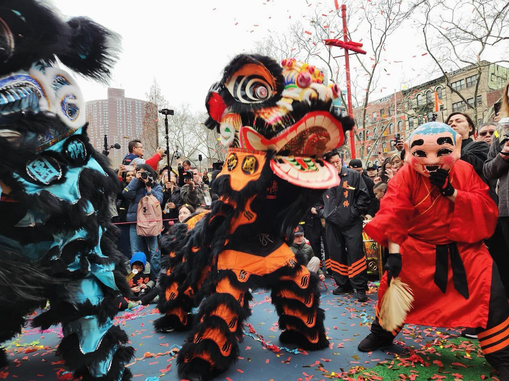

Every year during Chinese New Year, Chinatown hosts their annual lion dance celebration, showcasing colorful lion dance costumes and a traditional dance. They dance through the streets to the sound of loud drums and cymbals. In Chinese tradition, this brings good luck and prosperity for the new year. Crowds form along the streets to watch the performances, celebrate Chinese culture, and welcome the new year with a new mindset.